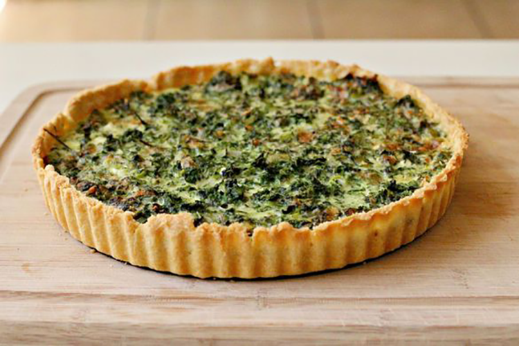

Makes 6 servings. Prep 5 minutes. Bake at 375° for 15 minutes, then at 325° for 20 minutes
Cheese, Cheese, and More Cheese
This is my favourite food because it's packed with cheese. Delicious melty cheese. The spinach makes it technically healthy and it's light so I can eat an entire quiche without my stomach exploding. And since it's a pie it might as well be dessert, so you can trick your kids into being excited for pie, and then crush their hopes with vegetables. AND CHEESE!
Heat oven to 375°. Fit piecrust into a 9-inch pie plate, crimping edge.
In a medium-sized bowl, whisk together eggs, milk,salt, and pepper. Spread the spinach into the bottom of the prepared piecrust. Pour egg mixture evenly over spinach, then sprinkle with the cheese.
Transfer quiche to 375° oven and bake 15 minutes. Reduce heat to 325° and continue to bake 20 minutes, until crust is puffed and browned (cover with foil if browning too quickly). Let stand 5 minutes before slicing and serving.